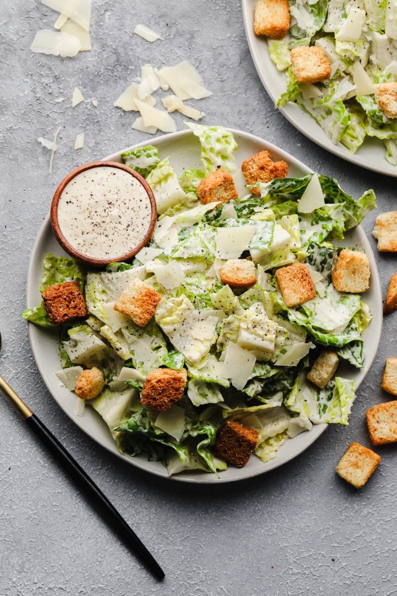
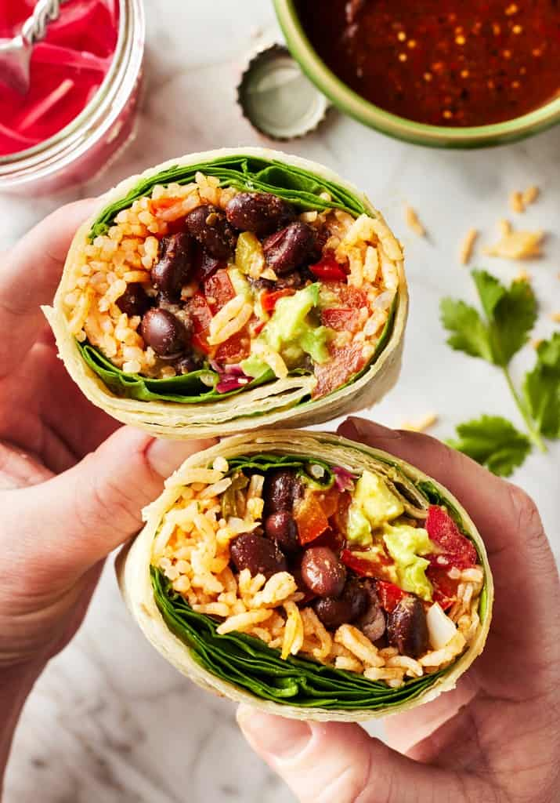

Vegan Caeser Salad
Published on: September 22, 2024

INGREDIENTS
3 medium heads romaine washed and chopped
▢1 batch Vegan Caesar Dressing
▢2 cups vegan croutons or crispy chickpeas, see Notes
▢1/2 cup shaved vegan parmesan or crumbles
INSTRUCTIONS
Wash and chop all the lettuce
– I usually fill my clean sink with cold water, add the lettuce leaves and move them around with my hands to clean off debris, use my salad spinner to spin it dry, then chop.
Prepare dressing
– Make your Vegan Caesar Dressing and set aside.
Toss and serve
– Add the chopped romaine to a large salad bowl or platter and toss with the dressing, as desired. You will probably not quite use all of it, and it's best to save a little for drizzling on top of each bowl. Sprinkle with croutons, shaved parmesan and a little fresh ground black pepper, if desired. Divide into bowls, serve and enjoy!
Prep ahead of time
– To prep the salad ahead of time, wash and chop the lettuce, make the dressing and keep separate in the refrigerator until ready to serve.
Carrrot & Chickpea Burger
Published on: November 21, 2024

INGREDIENTS
3 medium carrots, grated
1x 400g tin of chickpeas, drained
1 medium egg
salt & pepper, to taste
2 tbsp dried mixed herbs
100g breadcrumbs or porridge oats
Your choice of extras to serve: burger buns, sliced tomatoes, sliced avocados, lettuce, mayonnaise or hummus or pesto, pickles, sliced cheese, or your own favourites
INSTRUCTIONS
Mix carrots, chickpeas, egg, salt & pepper, dried mixed herbs and breadcrumbs or oats in a food processor to form a smooth, thick paste.
Form into 8 patties and fry in a drizzle of olive oil in a pan set over medium heat until cooked through and golden (about 3-4 mins on each side).
Serve with your choice of bun, fillings and extras.
To make it extra fun for the kids, choose a selection of favourite burger fillings you are happy for them to eat and lay them out in bowls and plates on the table to make it a “build-your-own” burger dinner. They are more likely to eat the veg they choose to put in it themselves!
Vegan Burrito
Published on: September 22, 2024

INGREDIENTS
Flour tortillas – Look for ones that are soft, pliable, and large enough to fit a good amount of filling. I typically use 10-inch tortillas.
Spanish rice – You could use plain white rice or brown rice in a pinch, but I love the depth of flavor the Spanish rice adds to this recipe.
Black beans – For plant-based protein! You'll season them up with fresh lime juice and a pinch of taco seasoning for bold, zesty flavor.
Red bell peppers – You'll quickly char them on the stove so that they become sweet and smoky.
Spinach – It adds refreshing crunch.
Guacamole – It offers a rich and creamy contrast to the fresh veggies in the filling. Don't feel like making guac? Avocado slices would work here too!
Pickled red onions – For a bright pop of flavor.
Fresh cilantro – A burrito essential, if you ask me. I love the kick of fresh flavor!
Jalapeños – For heat. Feel free to skip them if you're sensitive to spice.
Extra-virgin olive oil – For seasoning the beans and cooking the peppers.
And salt and pepper – To make all the flavors pop!
INSTRUCTIONS
First, prep the fillings. Start by making the pickled onions because they taste better the longer they sit in the fridge. For the best flavor, I recommend making them a day in advance.
You’ll also need to cook the Spanish rice, season the black beans, and char the peppers. If you like, you can make all these components ahead of time. Store them in an airtight container in the fridge for up to 3 days before assembling the burritos.
When it comes to the guac, you can go all out and make my best guacamole recipe, or make a quick guacamole with mashed avocado, garlic, lime juice, and salt. Alternatively, use store-bought guacamole to simplify your prep. Next, fill the burritos. Place the tortillas on a flat, clean work surface. Add a layer of spinach followed by the rice, beans, peppers, guacamole, pickled onions, cilantro, and jalapeños.Finally, fold them closed. Fold the sides of the tortillas over the filling, and then fold up the bottom flap. Tuck and roll the burritos closed. Want more burrito-folding tips? Check out my post on how to fold a burrito!
Slice the burritos in half, if desired, and enjoy!